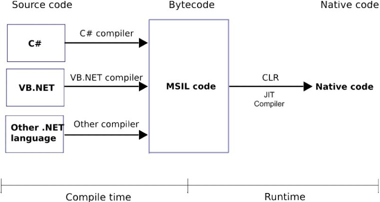
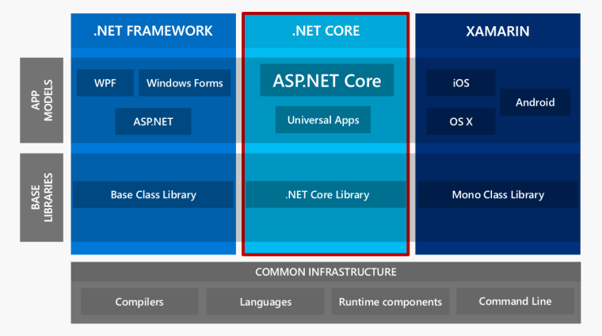

.NET core vs ASP.NET core: Phân biệt .NET Framework, .NET Core và Mono
Một trong những điểm mạnh của hệ sinh thái .NET là sự hỗ trợ rất tốt của các công cụ như Visual Studio. Tuy nhiên đây cũng là điểm yếu vì nó ngăn cản rất nhiều lập trình viên tiếp xúc với những lý thuyết căn bản của Framework. Trong bài viết này chúng ta sẽ tìm hiểu xem .NET là gì, và các nền tảng .NET Framework, .NET core, và Mono khác nhau như thế nào.
TẠI SAO CẦN NẮM RÕ LÝ THUYẾT CĂN BẢN?
Rất nhiều những người đã làm việc với .NET lâu năm nhưng vẫn mù mờ về những khái niệm, định nghĩa của Framework. Điều này rất nguy hiểm vì nó gây ra việc hiểu sai về nền tảng, dẫn đến việc sản sinh ra những phần mềm chất lượng không cao. Do đó hiểu rõ về framework của mình là trách nhiệm của bất cứ lập trình viên nào?
KHI NÓI VỀ .NET, NGƯỜI TA THƯỜNG HÀM Ý 3 THÀNH PHẦN:
– Runtime (môi trường hoạt động)
– Libraries (thư viện)
– Toolings (công cụ phát triển).
Chúng ta sẽ từ từ tìm hiểu chức năng từng thành phần ở phần sau của bài viết.
Trước hết, chúng ta cần hiểu được làm thế nào .NET có thể chạy được đoạn code C#(hay VB, F#) mà bạn viết ra. Để hiểu được điều này, chúng ta cần nắm rõ quy trình biên soạn code trong .NET

Trong hình trên, phần ‘Compile time’ là quá trình ‘Build’, và ‘Runtime’ là quá trình chạy (tức là tính từ khi bạn khởi động ứng dụng của mình).
Về cơ bản, khi bạn thực hiện lệnh build (trong Visual Studio, hay ‘dotnet build’ bằng dòng lệnh) thì source code của bạn được chuyển hóa thành một dạng ngôn ngữ trung gian có tên là MSIL (Microsoft Intermediate Language). Khi ứng dụng được khởi chạy, thành phần Runtime-hay tên gọi riêng biệt trong .NET là CLR(common language runtime) sẽ tiến hành dịch mã MSIL thành mã máy(Native code) để cho máy tính có thể thực thi. Quá trình này gọi là JIT (just-in-time) compilation. Cách biên soạn và vận hành của .NET khá giống với Java.
Để hiểu rõ hơn về JIT, chúng ta hãy thử làm một thí nghiệm. Copy đoạn code sau vào file Program.cs trong project của bạn:
Chúng ta sẽ tiến hành gọi cùng 1 hàm 2 lần và đo xem thời gian chạy của 2 lần gọi là bao nhiêu. (10000 ticks = 1 ms). Tiến hành chạy ‘dotnet run’ và xem kết quả.
Bạn có thể thấy rằng lần chạy đầu tiên lâu hơn lần thứ 2 rất nhiều. Tại sao vậy? Đó là do khi DoSomeCalculation() được gọi lần đầu, CLR tiến hành biên soạn (JIT) hàm này thành ngôn ngữ máy. Ở những lần chạy kế tiếp, DoSomeCalculation() không cần ‘JIT’ lại (do đã được ‘JIT’ xong), nên thời gian thực thi nhanh hơn nhiều. (Điều này cũng lý giải tại sao trong một số phần mềm, thời gian thực hiện một chức năng nào đó lần đầu tiên thường chậm hơn so với các lần kế tiếp).
Ngoài việc biên dịch, môi trường hoạt động (Runtime) còn có những công dụng như:
– Tự động quản lý bộ nhớ. Khi làm việc với những ngôn ngữ bậc cao như C# hay Java, bạn không cần giải phóng bộ nhớ bằng cách gọi free() như khi làm việc với C/C++. CLR bao gồm một công cụ dọn rác (Garbage collector -GC) sẽ tự động giải phóng những phần bộ nhớ không được sử dụng
– Strong typings: CLR quản lý thông tin về các kiểu dữ liệu mà bạn sử dụng. Điều này giúp cho bạn có thể phân biệt được các định dạng thông tin của từng biến khác nhau (class, structure…)
Thế còn hệ thống thư viện (Libraries) và công cụ (Toolings) thì sao?
Khi bạn làm việc với .NET, code của bạn sẽ tương tác với rất nhiều các class khác nhau. Ví dụ: Class được sử dụng nhiều nhất trong .NET là System.String. Tất cả những class này được định nghĩa trong hệ thống thư viện cơ bản của .NET mà người ta hay gọi tắt là BCL (Base class libraries).
Các công cụ (toolings) của .NET bao gồm compiler và Visual Studio .NET sử dụng hệ thống build của Microsoft gọi là MSBuild. Đối với nền tảng .NET core mới thì chúng ta còn có thêm công cụ dòng lệnh (dotnet cli).
Phân biệt .NET Framework, .NET Core, và Mono
Tại sao cần phải phân biệt chúng? Vì bạn cần phải hiểu rõ mình đang làm gì. VD: Nếu bạn có ý định chạy một Web server trên Linux thì tuyệt đối không nên sử dụng Mono.
Đối với những người mới làm quen với .NET hay kể cả một số người đã làm việc với .NET lâu năm, những cái tên như .NET Framework, Mono hay gần đây nhất là .NET core vẫn hay gây ra những hiểu nhầm. Tuy nhiên những khái niệm căn bản về .NET nói trên giúp chúng ta phân biệt khá dễ dàng. Về cơ bản, .NET Framework, .NET core và Mono là ba phiên bản .NET khác nhau (có nghĩa là mỗi phiên bản có Runtime, Libraries và Toolings riêng).
Vậy tại sao lại có đến 3 phiên bản khác nhau?
– .NET Framework được Microsoft đưa ra chính thức từ năm 2002. .NET Framework chỉ hoạt động trên Windows. Những nền tảng ứng dụng như WPF, Winforms, ASP.NET(1-4) hoạt động dựa trên .NET Framework.
– Mono là phiên bản cộng đồng nhằm mang .NET đến những nền tảng ngoài Windows. Mono được phát triển chủ yếu nhằm xây dựng những ứng dụng với giao diện người dùng và được sử dụng rất rộng rãi: Unity Game, Xamarin…
– Cho đến năm 2013, Microsoft định hướng đi đa nền tảng và phát triển .NET core. .NET core hiện được sử dụng trong các ứng dụng Universal Windows platform và ASP.NET Core.

VẬY TÔI NÊN SỬ DỤNG .NET FRAMEWORK, .NET CORE, HAY MONO?
Điều đó tùy thuộc vào ứng dụng mà bạn có ý định phát triển. Đối với các ứng dụng Windows desktop, .NET Framework sẽ là sự lựa chọn của bạn. Nếu bạn phát triển game dựa trên Unity, hay những ứng dụng di động với Xamarin, bạn sẽ sử dụng Mono. Đối với các Web server, bạn có thể sử dụng cả .NET Framework và .NET Core.
Tuyệt đối không nên dùng Mono để vận hành web server. Bộ máy dọn rác của Mono không được thiết kế để hoạt động với webserver và sẽ gây ra quá tải nhanh chóng.
Vậy nên lựa chọn .NET Framework hay .NET Core cho các web server? .NET Core chạy được đa nền tảng và có hiệu năng cao hơn. Nhược điểm duy nhất của nó là số lượng thư viện hỗ trợ vẫn còn hạn chế. .NET Framework có hệ sinh thái lớn hơn với nhiều các thư viện hỗ trợ hơn.
Series này sẽ sử dụng .NET Core. Chúng ta nên hướng đến tương lai đúng không?